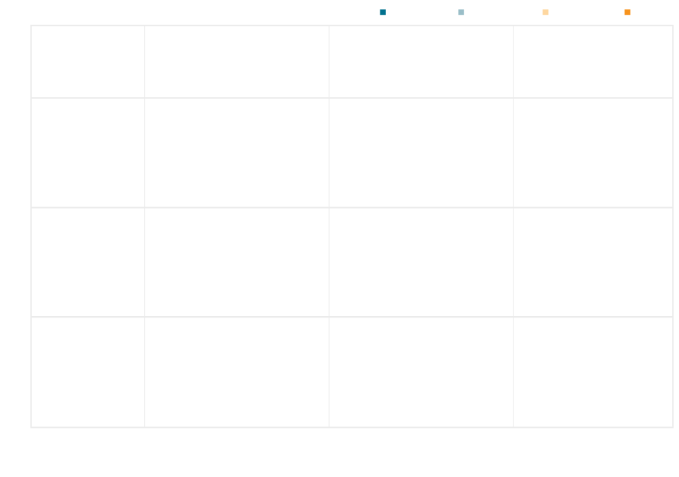
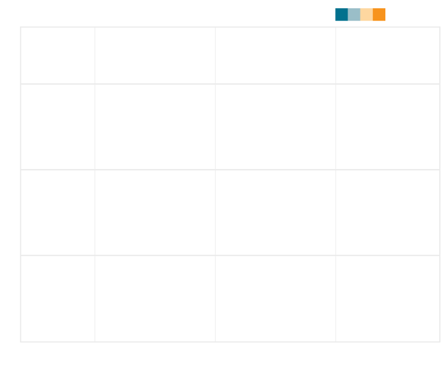
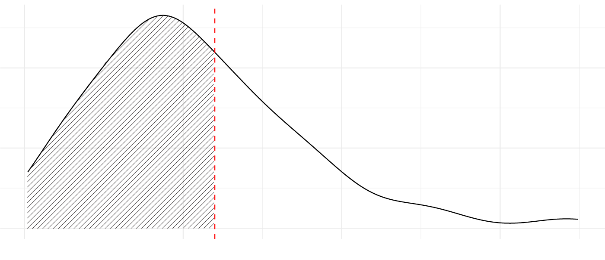
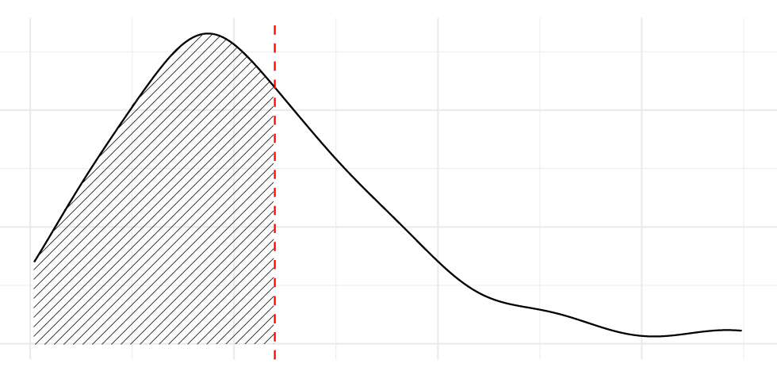

Pro bono services at law firms have increasingly become a resource to fill up the legal aid gap. However, for most billing attorneys at big law firms, it can be a struggle striking a balance between reaching the billable hours target and having the capacity to contribute to pro bono work.
“Firms want to charge clients. So their priority is always like that, you can bill,” said Emanuel Cardenas, a foreign legal consultant at Clark Hill, one of the AmLaw 200 firms featured on the American Lawyer Pro Bono Scoreboard. “You just gotta prioritize that.”
A Columbia Journalism School analysis using the data from American Lawyer Pro Bono Scoreboard found that firms with greater financial resources are more likely to have a stronger pro bono culture. Additionally, firms with a higher percentage of racially diverse attorneys and substantial financial resources present a greater average number of pro bono hours per lawyer.
The analysis also found that there is strong evidence that profit margin has a real effect on the percentage of lawyers performing more than 20 hours of pro bono work annually and average pro bono hours per lawyer at law firms. Having financial leeway appears to be a premise to hold up a solid pro bono portfolio. Due to the limitation of data, this analysis did not include data regarding the structure of pro bono programs and how it impacts the pro bono performance of a firm.
Columbia Journalism School also discovered that regardless of the size of the firm, the emphasis on the pro bono work is crucial to an outstanding pro bono profile. It could be shown by having a robust pro bono program, backed by a well-established management team, or maintaining a supportive atmosphere for pro bono work.
Lower range
Lower middle
Upper middle
Upper
Profit margin:
Average pro bono hours per attorney
MORE HOURS PER ATTORNEY
150
100
50
MORE RACIAL DIVERSITY WITHIN A FIRM
0
15%
25%
35%
Percentage of racially diverse attorneys

Lower range
Lower middle
Upper middle
Upper
Profit margin:
Average pro bono hours per attorney
MORE HOURS PER ATTORNEY
150
100
50
MORE RACIAL DIVERSITY WITHIN A FIRM
0
15%
25%
35%
Percentage of racially diverse attorneys

Average pro bono hours per attorney
Profit margin:
Lower
Upper
MORE HOURS PER ATTORNEY
150
100
50
MORE RACIAL DIVERSITY WITHIN A FIRM
0
15%
25%
35%
Percentage of racially diverse attorneys
Source: American Lawyer 2024 Pro Bono Scoreboard. Chart by Sabina Hung
Glossary: Profit margin is the percentage of revenue that becomes profit.
This is a scatterplot of the Am Law 200 law firms and their performances in three different aspects: Profit margin, racial diversity and pro bono performance. Each dot is a law firm.
The x-axis represents the percentage of racially diverse attorneys. The y-axis represents average pro bono hours per attorney in 2023.
Firms are labeled in four colors based on their profit margin.
Firms that are in the lower 25th percentile of profit margin are in blue, while firms in the upper 25th percentile are in orange.
Firms with higher profit margins perform
Firms with lower profit margins perform
New York State mandates that all applicants for admission to the state bar complete 50 hours of pro bono service. It was implemented with the aim of instilling a commitment to public interest service in law students and to address limited access to legal assistance. Nevertheless, the policy has received criticism. Critics argued that it adds burden to inexperienced and indebted law students when there are no pro bono requirements on practicing lawyers.
On the other hand, while the American Bar Association (ABA) calls for every lawyer to perform at least 50 hours of pro bono work each year, it has never been a hard rule for lawyers to contribute to pro bono work. According to Scott Cummings, Robert Henigson Professor of Legal Ethics at the UCLA School of Law, imposing a mandatory pro bono contribution could place an unfair burden on smaller firms. “It has uneven effects on lawyers, depending on where they're situated in the bar,” said Cummings.
Unlike large law firms, which typically have the resources to organize and manage pro bono cases, meeting the same pro bono targets can be economically challenging for small firms. Due to this, performing pro bono services after being admitted to the bar has been advocated but voluntary. Commitment to pro bono services hence largely depends on individual choices, the culture and the policies of the firms.
The Pro Bono Institute, a non-profit organization founded to provide research, consultative services, and resources to support and cultivate a pro bono culture in major law firms, organized Law Firm Pro Bono Challenge, encouraging firms with 50 or more lawyers to commit each lawyer to performing either three or five percent of their annual billable target in pro bono work, equating to 60 and 100 hours annually, respectively.
Yet, according to the 2024 Pro Bono Scoreboard, most firms contribute no more than five percent of their billable hours target per lawyer to pro bono services. Only nine firms had an average of more than 100 hours in pro bono work per lawyer last year, while about 60 percent of firms on Pro Bono Scoreboard performed less than 60 hours per lawyer in 2023.
61 percent of law firms contribute less than 60 hours of pro bono work per lawyer in 2023
Distribution of average pro bono hours per lawyer at law firms

100
150 hours
0
50
60

60
0
50
150 hours
150 hours
0
50
60
100
Source: American Lawyer 2024 Pro Bono Scoreboard. Chart by Sabina Hung
“I declined like a couple of pro-bono projects because it was too much,” said Cardenas. Due to a busy docket and out of respect to the pro bono clients, Cardenas turned down a few pro bono opportunities when his work got overwhelming. “It's not about billing, it’s more about ‘this is so much work. I'm not going to be able to handle what I'm doing right now’,” said Cardenas.
Early career associates usually have strong incentives to take on pro bono cases in order to gain substantive experiences. At some firms, early career associates also have more pro bono credit to to be counted towards their billable target.
An attorney from Jenner and Block, whose firm ranked the top on the American Lawyer Pro Bono Scoreboard in 2024, told Columbia Journalism School that at their firm, first-year associates have unlimited pro bono work credits that count towards their billable target. Starting in the second year, pro bono credits are capped at around 100 hours.
As a result, attorneys often juggle whether and when to do pro bono work. Doing a lot of pro bono work early on in the year can jeopardize meeting billable targets, making career development and public interest work an either-or choice.
“If I do all this pro-bono, am I still going to have time in the day to be on track to get my bonus; or am I doing this pro bono at the expense of all the work?” said the attorney, who requested anonymity out of concern that discussing internal policies could jeopardize their job.
One of the reasons that law firms hire pro bono counsels is to organize and find manageable cases for attorneys who are in the billing practice. The billable client demands can get very overwhelming that the attorneys feel like they don't have time. Pro bono counsels introduce cases to billing attorneys based on their seniority, current schedule, and personal interest. Some firms conduct surveys or have one-on-one meetings to understand attorneys' interest area.
“It's not a straight line of getting work [for billing attorneys]. Something might heat up very quickly,” said Christina Holder, the public interest counsel at Lowenstein Sandler. "I have to find opportunities that fit within the reality of how their work is low cost."
The Rise of Pro Bono in Law Firms
The Legal Services Corporation (LSC) is the foundation of civil legal assistance in the United States. Though it doesn't deliver services directly, it operates as a grant-making agency funded by Congress, supporting locally initiated projects to provide legal aid to those in need. During the 1980s, significant funding cuts and service restrictions were imposed on LSC grantees by Congress. As a result, civil legal assistance began to depend more heavily on volunteer lawyers from the private sector, according to the study “Lawyers’ Pro Bono Service and Market-Reliant Legal Aid” by Rebecca Sandefur.
Although most top law firms have now established pro bono programs, the structure and value placed on pro bono work vary widely among firms. It may include creating formal policies, hiring a pro bono counsel to oversee the program, counting pro bono hours toward billable targets, or implementing a combination of these strategies, according to Steven Boutcher’s research in “Growth of Large Law Firm Pro Bono Programs.”
Rene Kathawala, the pro bono counsel at Orrick, Herrington & Sutcliffe, is one who witnessed the institutionalization of pro bono work at his law firm. Kathawala first came to New York in 1989 as a New York University undergraduate. “New York City was far different than it is today,” said Kathawala. “I realized I was privileged in many, many ways. And so I wanted to give back.”
Kathawala joined Orrick in 1995 as their summer associate, when there was no discussion of pro bono work. Kathawala takes on pro bono cases in his own time and started a pro bono program at Orrick as he became a first year associate. In 2005, Kathawala was hired as the first pro bono counsel at Orrick.
There was a dramatic growth in the pro bono counsel position in the early 2000s. A growing number of law firms are hiring in-house attorneys to manage, monitor and contribute to providing free legal services for those in need, according to Steven Boutcher’s study in “Growth of Large Law Firm Pro Bono Programs.”
Pro bono work began gaining popularity in law firms in the 1960s, influenced by the social movements of the time, such as civil rights, women’s rights, and antiwar movements. Prior to this, access to civil legal services for the poor primarily depended on legal aid organizations and individual lawyers. The awareness raised by these movements inspired elite law students to pursue public interest issues, leading to the initial institutionalization of pro bono services at law firms
In the later 20th century, the expansion of law firms and increased profitability enabled the bureaucratization of pro bono programs. With more resources available, firms were better equipped to support pro bono work, leading to another wave of institutionalization.
The emergence of ranking systems has also accelerated the growth of pro bono programs within law firms. It first began with the A-list, created by the American Lawyer magazine in 2003, which attempts to assess top law firms in a holistic view. It not only factors in a firm's financial performance, but also considers a firm’s diversity, pro bono work and associate satisfaction. While pro bono performance is now specifically highlighted in the Pro Bono Scoreboard, securing a top spot on the Pro Bono Scoreboard remains important for these firms.
These ranking systems foster competition among major law firms. Being on the top of the list enhances their public image and helps attract ambitious young lawyers. It also gives those committed to pro bono work greater bargaining power to emphasize its value within their firms, according to Steven Boutcher’s research in “Growth of Large Law Firm Pro Bono Programs.”
Blair Decker, a pro bono counsel at Hogan Lovells, started as a pro bono coordinator in 2013. She has been with the firm for eleven years now. Throughout these eleven years, her team expanded, and her position has also elevated. When she started in 2013, the pro bono team just consisted of a pro bono partner, an associate, a coordinator, paralegals, and assistant.
“It also helps that our peer firms are also adding more pro-bono attorneys or pro bono counsel,” said Decker. “I guess I'll just say that the pro bono positions at law firms, that's a very growing field.”
Navigating the Future of Law Firm Pro Bono
One challenge for higher pro bono commitment at law firms is that pro bono services are often seen in direct competition with billable hours. However, pro bono counsels have found otherwise. Some of the advantages of engaging in pro bono work include skill set building for early-career associates and improving public images of the firm, but there are also opportunities for strengthening relationships with paying clients and sharing resources with those in the public interest field.
Jacob Kreilkamp is a partner at Munger, Tolles & Olson and the co-chair of the firm’s Pro Bono Committee. There is no minimum requirement for pro bono service at Munger, but the firm ranked sixth on Pro Bono Scoreboard in 2024. “What we do is we hire people who want to do it,” said Kreilkamp. “It's part of our culture.”
As a partner of the firm, Kreilkamp frequently sends out pro bono opportunities to their associates and often takes on the supervision role for pro bono cases to provide guidance and ensure the quality of the work.
Besides having a formal policy that explicitly supports pro bono work, active involvement of partners in pro bono cases is another indicator for whether the firm values such work. Having partner supervisions for pro bono cases ensures high quality work and builds reputation for future collaborations with legal service organizations.
“I'm involved and I help them out. But I'm really trying to put them front and center, get them those opportunities, help them learn how to be lawyers. And it translates immediately to paid work,” said Kreilkamp.
Pro bono service can also create a virtuous cycle, benefiting those in need beyond just winning or losing a pro bono case. This can entail sharing firm resources with public interest lawyers who lack means, donating fee rewards from winning cases back to partner organizations, or using those funds to support fellowships or staff attorneys at public interest organizations.
“What I also figured out was that when I would partner with the ACLU [American Civil Liberties Union] or some of these other organizations, I could bring to bear the resources of my firm to help those organizations,” said Kreilkamp. “So not only am I able to sort of do this work that is so meaningful to me, but I can then help these organizations through the resources of my firm.”
Aside from gaining valuable litigating experience and building long lasting client relationships from working on more pro bono projects, firms are also noticing an increase in their interest of paying clients’ to perform pro bono work together with law firms. These collaborations often take the form of clinics, where the firm and lawyers from the billable clients would dedicate about half a day to consulting with individuals in need of legal assistance.
Kramer Levin is small compared to some of the top-performing firms on the Pro Bono Scoreboard, yet it consistently ranks within the top 30. The familiarity with pro bono work at Kramer Levin has made their paying clients more willing to collaborate with them on pro bono cases.
“It's a little bit easier for them to do pro bono with us, because we're more used to setting up these sorts of clinics,” said Jamie Porco, Director of Professional Development and Pro Bono Programs at Kramer Levin. “We're building a rapport with our own paying clients, but also doing good for the community.
However, scholars have also cautioned the for-profit nature of the firms and its inclination to lead to a mismatch of society’s actual legal need. According to the LSC Intake Census in 2021, the top three most requested legal services are housing, family and safety and income maintenance. Yet, a research conducted by Atinuke Adediran in “Solving the Pro Bono Mismatch” found that the pro bono services provided by private lawyers do not meet the needs of low-income individuals.
To ensure participation in pro bono cases, pro bono counsels are encouraged to introduce cases that fit the interest of individual attorneys even though it does not always align with the service areas that are most demanded. Another cause for the mismatch is that the firms have to avoid positional conflicts where their previous legal argument for a client may be directly contrary to another client. In consequence, many big firms avoid matters in areas such as employment law, labor law and foreclosure, where legal assistance is short of.
According to the LSC Intake Census in 2021, about one-half of low-income individuals that went to LSC-funded organizations for assistance were turned away without receiving any sort of legal help. On the other hand, the firms also stressed that sometimes lawyers do need to make time for pro bono work when they have a busy billable docket.
According to Kreilkamp, not everyone contributes to pro bono work equally at Munger. “If everyone at the firm bills as many pro bono hours and some of us do, it would not be an economically feasible thing.”
While pro bono services rely largely on volunteerism, Cummings contends that pro bono work should be carried out more strategically. “They should be really targeted at what the needs are. We should really expect lawyers to do their part, but also do it for really important social issues,” said Cummings.